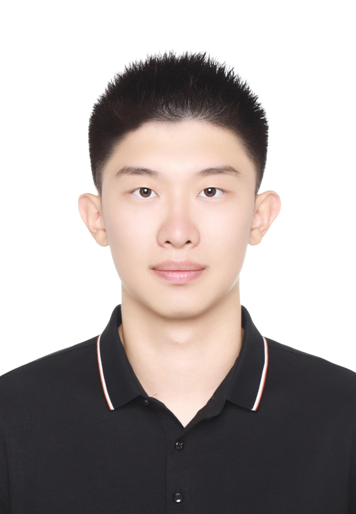

Wentao MaUpcoming Master Student
Computer Science / Computing
|
 |


Introduction
I got my bachelor's degree from Beihang University, School of ShenYuan Honors College, and my major is Computer Science. During my undergraduat study life, I worked hard and achieved a good academic performance, which could be seen on my CV. Also, I've uploaded some Course Projects on my Github. If you find it's useful or impressive, please give me a star :)
Besides, I worked as an intern in some famous international companies, such as ByteDance, Sony, etc. The detailed information could be seen below. I also have some research interests such as Computer Vision, Deep Learning, Robust AI, Surgical Image, etc. Some detailed experiences could be seen below.
It's so lucky that I've lived with a great family in Beijing, China for 22 years, which enables me to develop my hobbies. I'm interested in every sport, but I'm really into skateboarding, snowboarding, and surfing. And Recently, tennis is what I practice most.
I will enroll at Imperial College London in the autumn of 2023 to complete the MSc Computing program. Feel Free to contact me!
News
- [06/2023] I graduated from Beihang University.
- [05/2023] I finished my graduation design at Beihang university with a paper published.
- [01/2023] I finished the Multi-Obj-Tracking project in Sony, which could be seen below.
- [11/2022] I start to work with Prof.Aishan Liu and Dr.Shunchang Liu on my graduation design.
- [09/2022] I build my homepage website.
- [09/2022] I join SONY as an intern.
- [06/2022] I join ByteDance as an intern.
- [05/2022] I start to work with Dr.YueMing JIN as a summer intern at UCL WEISS.
- [01/2022] I start to work with Prof.Jia Li as a research intern at CVTEAM, Beihang University.
Research Experience

|
Prof.Aishan Liu, State Key Laboratory of Software Development Environment, Beihang University Graduation Design, focus on Robust Deep Learning Nov.2022 - May.2023 |
|
|
Dr.Yueming Jin, WEISS, UCL Research Intern, focus on Surgical Video Segmentation June.2022 - Feb.2023 [website] |
|
|
Prof.Jia Li, CVTEAM, Beihang University Research Intern, focus on Salient Object Detection(SOD) Jan.2022 - May.2022 [website] |
Internships
|
|
Smart Camera, Semiconductor Solutions Group, SONY Edge AI Engineer Intern Sep.2022 - Feb.2023 [website] |
|
|
IOS develop, TikTok Pay, ByteDance IOS developer Intern June.2022 - Aug.2022 [website] |
|
|
Data analysis, Brilliant Company software Intern July.2021 - Sep.2021 [website] |
Projects
| Multi-Obj-Tracking 2022-2023 Sony Intern Project [link] |
|

|
Image-Processing 2021-2022 Image Processing Course Project [link] |

|
SysY-Compiler 2021-2022 Compile Course Project [link] |

|
DBProject 2021-2022 Database Course Project [link] |

|
Computer-Graphic 2021-2022 Computer Graphic Course Project Using Glut,FreeImage on windows [link] |

|
CommuSys 2021-2022 Computer Network Course Project [link] |
Selected Awards
| Outstanding Graduates of Beihang University --- 2023 |
| Honorable Mention of Mathematical Contest in Modeling --- 2022 |
| Scholarship for Academic Excellence of Beihang University --- 2020/2021/2022 |
| Scholarship for Discipline Competitions of Beihang University --- 2020/2021/2022 |
| Third Prize of Beijing Municipal Physics Competition --- 2020 |
| Excellent Student Leader of Beihang university --- 2020 |
Student Work
| Hurricane Skateboarding Club of Beihang University --- Director --- 2021 |
| Honors College of Beihang University --- Mentor --- 2021 |
| Student Union of Beihang University --- Leading Member --- 2020 |

© Wentao Ma | Template From Dr.YueMing Jin | Last updated: Jul 2023